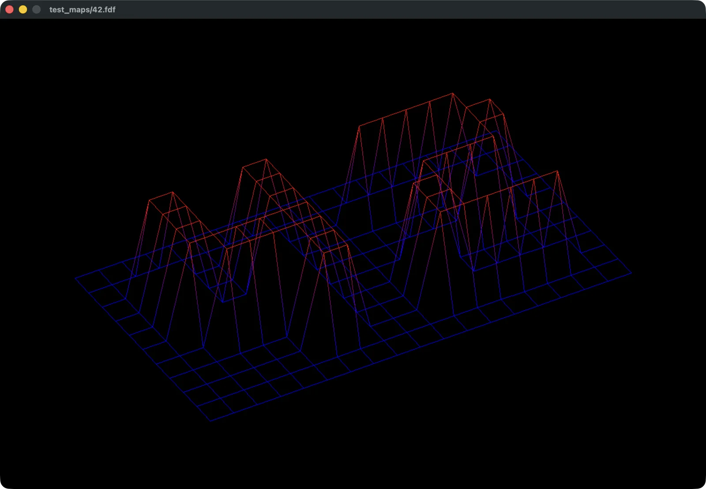

Wireframe rendering
FdF
높이 데이터를 선으로 연결해 그리는 C 와이어프레임 렌더러

구현
높이 데이터에서 화면 좌표로
입력 파일의 격자 위치와 높이를 3차원 좌표로 구성합니다. 회전·확대·축소를 반영해 화면 좌표로 바꾸고, 인접한 점을 선으로 연결해 지형을 표현합니다.
선과 색상의 픽셀 계산
화면에 투영한 두 점 사이를 Bresenham 알고리즘으로 그립니다. 양 끝점의 색상을 보간해, 점에 주어진 색상이 선을 따라 이어지도록 했습니다.